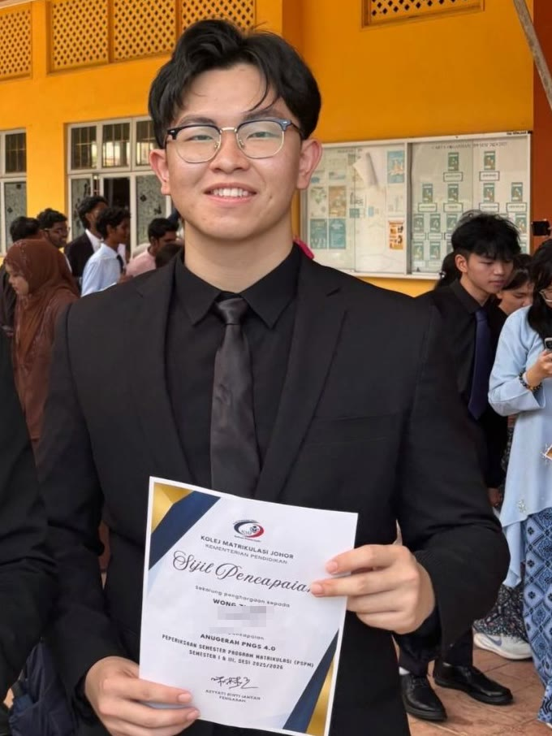
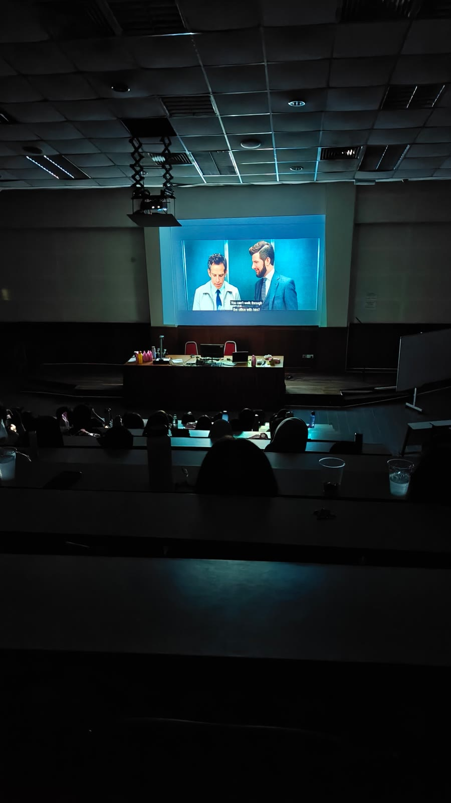
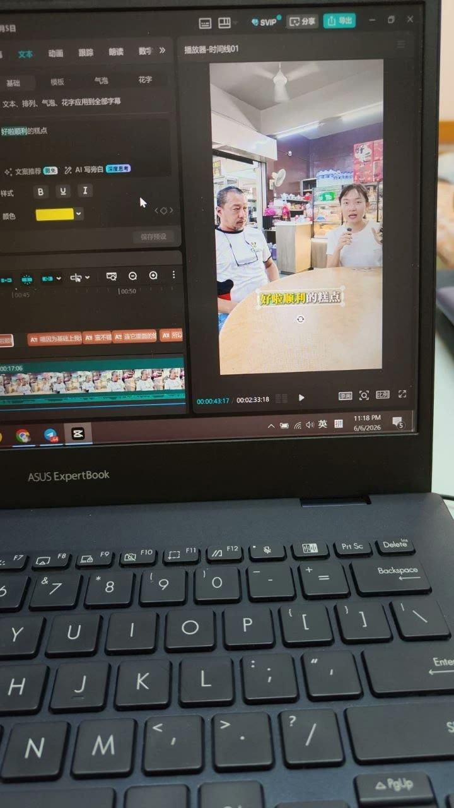
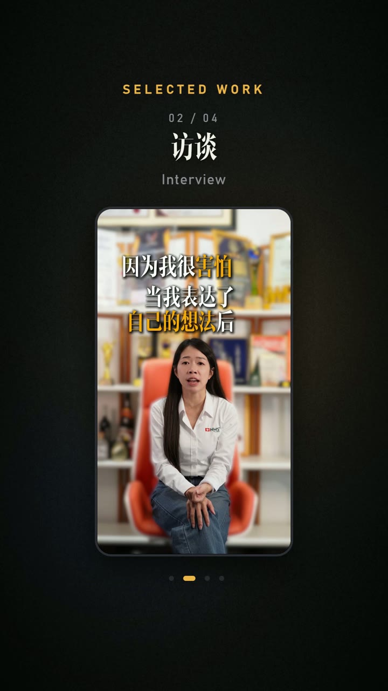
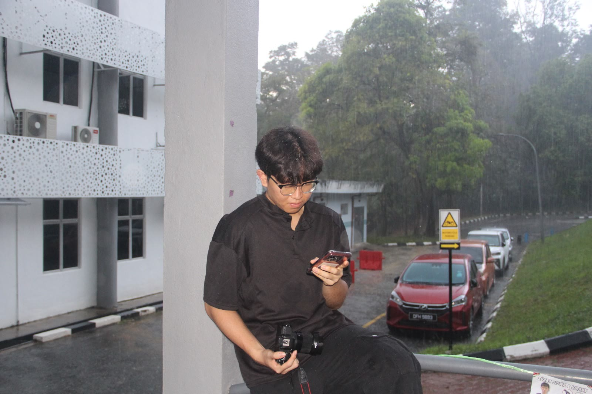
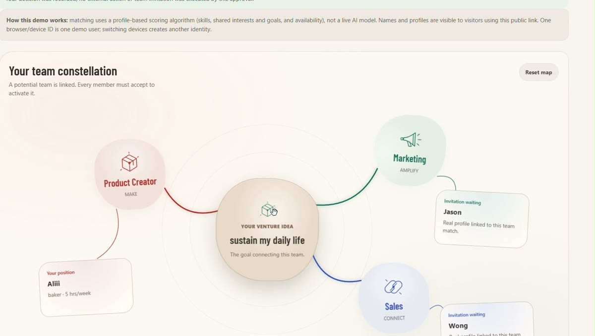
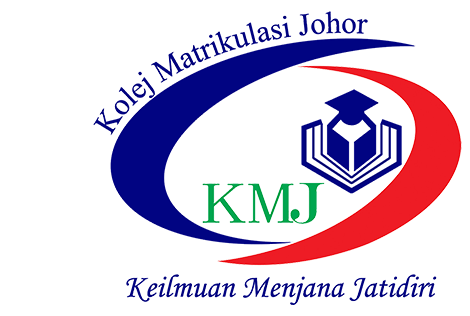
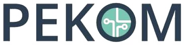
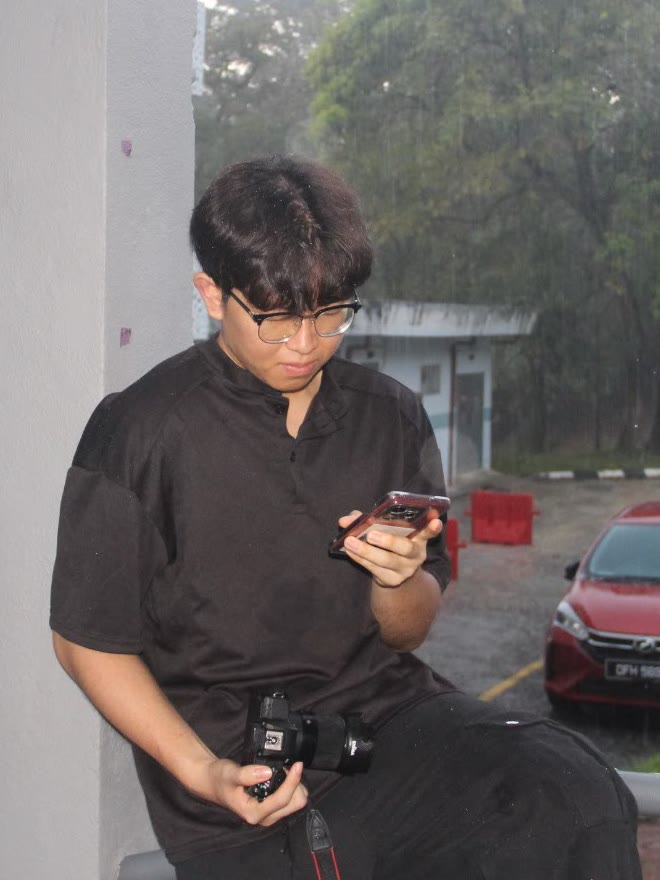

Jun 2025
Johor Matriculation College柔佛预科学院
Physical Science, finished with a 4.00 CGPA.物理科学组，CGPA 4.00 毕业。
First-year Computer Science (AI) at Universiti Malaya. I edit short videos, and I write the tools that make editing faster.马来亚大学计算机科学（人工智能）一年级。我剪短视频，也写让剪辑更快的工具。
I edit short videos for creators and small brands, and I write the tools that make the editing faster.
我为博主和小品牌剪短视频，也写让剪辑更快的工具。

Physical Science, finished with a 4.00 CGPA.物理科学组，CGPA 4.00 毕业。
5 minutes, made with Jimeng and Seedance for a competition.用即梦和 Seedance 为比赛做了 5 分钟短片。

Event director: logistics and sound for 100 to 150 students.总负责：100 到 150 人的场地和音响。

3 videos a week for a frozen kuih café in Yong Peng.为永平的冷冻糕点 café 每周剪 3 支片。

50+ short videos for clients so far.至今为客户剪了 50 多条短视频。

Bachelor of Computer Science (AI), year 1.计算机科学（人工智能）一年级。

UI/UX designer in a team of 4.4 人团队里负责 UI/UX。
An Instagram channel, and two agent skills on GitHub.开了 Instagram 频道，两个 agent skill 在 GitHub 开源。


I went to school in Yong Peng, Johor, and now study AI in Kuala Lumpur. Most of my work sits between the two halves: cutting videos, and writing code that cuts them faster.我在柔佛永平读完中学，现在在吉隆坡读 AI。我做的事大多在两者之间：剪视频，也写让剪视频更快的代码。
Bachelor of Computer Science (AI)计算机科学（人工智能）学士
2026 to 2030Physical Science, CGPA 4.00物理科学组，CGPA 4.00
2025 to 2026SPM, 10 A's. I speak Chinese, English and Malay.SPM 10A。会中文、英文和马来文。
